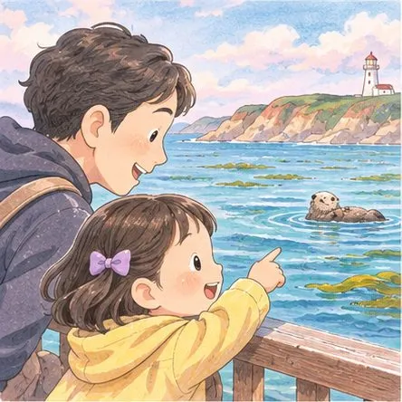

루루야, 나도 같이 놀아도 돼?
새로운 친구에게 다가가는 용기, 마음이 속상할 때 다시 일어서는 힘을 배우는 이야기.
그림책 읽기 →씩씩한 용기와 다정한 마음이 자라는 곳.
오늘은 어떤 이야기를 함께 읽어볼까요?

새로운 친구에게 다가가는 용기, 마음이 속상할 때 다시 일어서는 힘을 배우는 이야기.
그림책 읽기 →
해달과 함께 신비로운 바다숲을 탐험하는 열 장면의 과학 생활 그림책.
그림책 읽기 →이 주제의 그림책은 준비 중이에요. ✨
새로운 이야기가 하나씩 이 책장에 더해져요. 모든 동화는 세로로 스크롤하며 읽을 수 있어요.